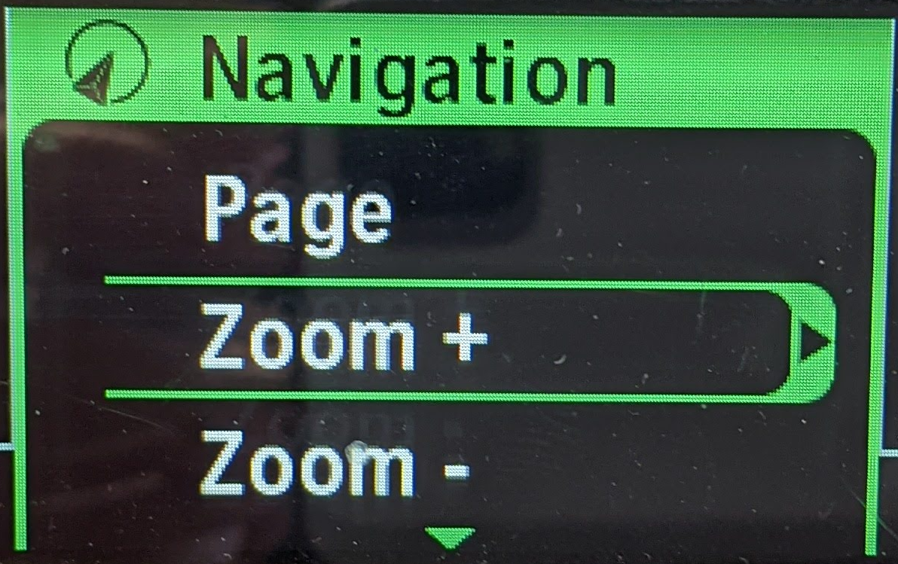
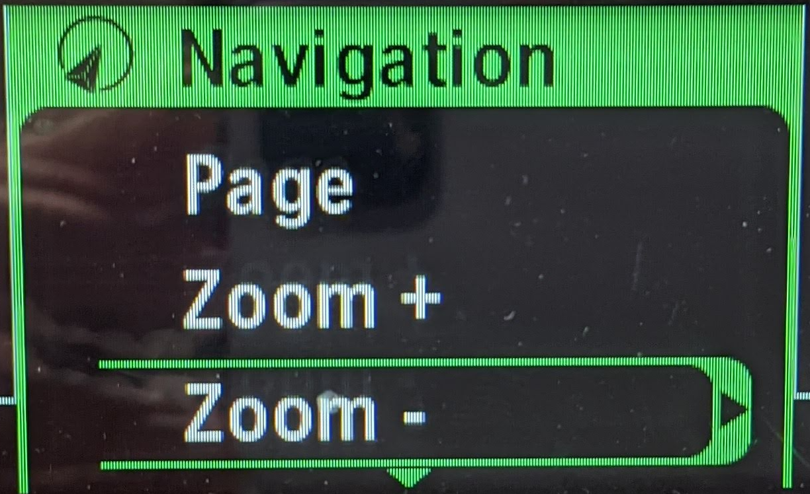
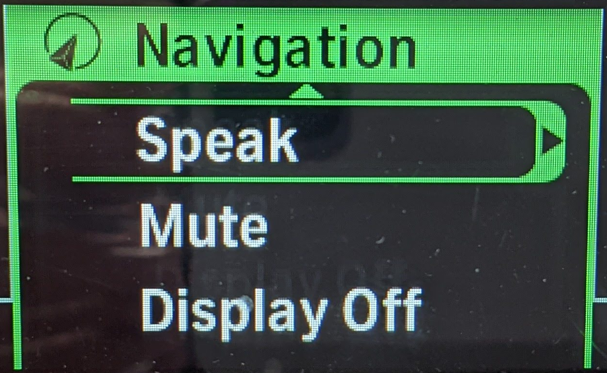
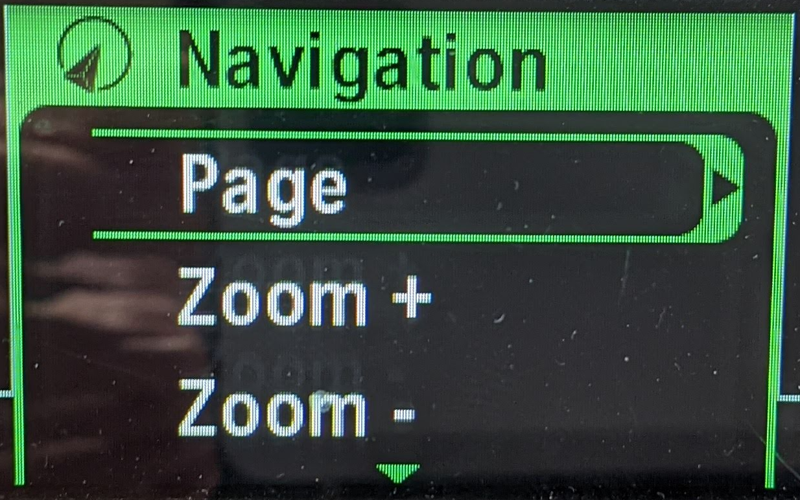
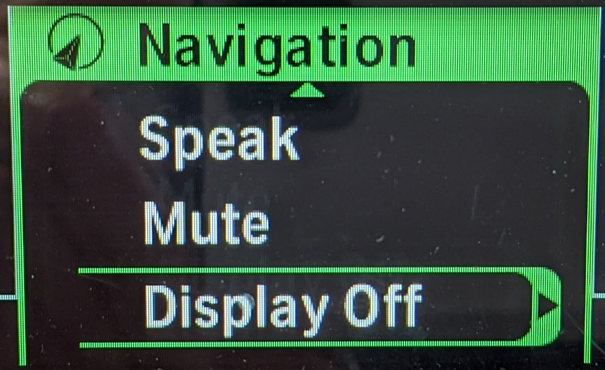
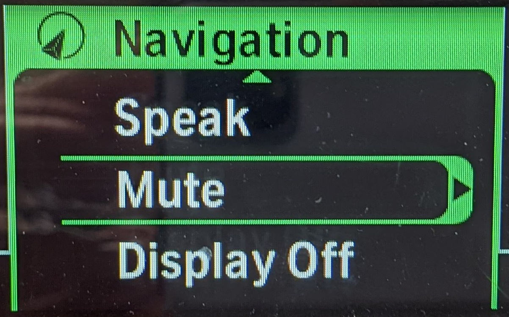

WunderLINQ Navigator Install Documentation
Version 1.0
Introduction
First of all, Thank you for purchasing the WunderLINQ!
This documentation is to help you install the WunderLINQ on your motorcycle. Please review the document completely before attempting the install.
Requirements
You will need to following to install the WunderLINQ on your motorcycle.
- WunderLINQ
- BMW Motorcycle with Navigation Preperation
For performance and fault data your motorbike must have the option On-board Computer Pro.
Install
This video covers the install of the WunderLINQ Navigator.
Usage Notes
Below is the mapping between Wunder Wheel input and keyboard input. If you are using the WunderLINQ with an RT or K1600 view the mappings at the end of this section.

| Hand Controls | Keyboard Key | |
|---|---|---|
| Scroll Wheel Up | UP Arrow | |
| Scroll Wheel Down | DOWN Arrow | |
| Wheel Left | LEFT Arrow | |
| Wheel Right | RIGHT Arrow | |
| Wheel Left Long Press | ESCAPE | |
| Wheel Right Long Press | ENTER | |
| Indicator Cancel | iOS Keyboard Toggle | WunderLINQ V2 or greater |
| Indicator Cancel Long Press | Phone Mute | WunderLINQ V2 or greater |
If your bike is equipped with a TFT instrument cluster, please see the notes below.

If your bike is equipped with a TFT instrument cluster, you will see a message on the TFT once the WunderLINQ has been inserted into the cradle.

The TFT indicates which device currently has wheel focus in the upper left-hand corner once the WunderLINQ has been detected. Switching the wheel focus to the WunderLINQ by changing the mode to Nav by long-pressing the Menu button UP.

To switch wheel focus back to the TFT, press the Menu button down
Below is the mapping between Wunder Wheel input and keyboard input on RT and K1600.
| Hand Controls | Keyboard Key | ||
|---|---|---|---|
|  | Zoom+ | UP Arrow | |
|  | Zoom- | DOWN Arrow | |
|  | Speak | LEFT Arrow | |
|  | Page | RIGHT Arrow | |
| Speak Double Click | ESCAPE | ||
| Page Double Click | ENTER | ||
|  | Display Off | iOS Keyboard Toggle | WunderLINQ V2 or greater |
|  | Mute | Phone Mute | WunderLINQ V2 or greater |
{kind=link}
{kind=link}
{kind=link}
{kind=link}
{kind=link}
{kind=link}
If your motorbike has a TFT instrument cluster, you must put it in Nav mode or Nav menu on the RT/K1600, to pass the wheel presses to the cradle.
Troubleshooting
Solid Blue/Green LED or No LED
If the WunderLINQ unit’s LED immediately goes solid green/blue or doesn’t light at all on insertion the unit has failed and must be replaced.
Additional Information
WunderLINQ Firmware
Support
Other Links
WunderLINQ Documentation Source Code
Disclaimer
WARNING: The use of the WunderLINQ, a product manufactured by Black Box Embedded, LLC, on your motorcycle is at your own risk. This product is intended for off-road use only and should not be used on public roads or highways. Black Box Embedded, LLC shall not be liable for any damages, injuries, or harm caused by the use of this product. By using this product, you acknowledge and accept the risks associated with its use, and you agree to waive any claims you may have against Black Box Embedded, LLC for any damages, injuries, or harm caused by the use of this product. This product is intended for use by experienced riders only and should not be used by beginners or inexperienced riders. Always exercise caution and ride responsibly.
WunderLINQ products should always be installed by a qualified technician. If you are unsure of your ability to properly install a product, please have the product installed by your local motorcycle technician. Black Box Embedded, LLC takes no responsibility for damages caused by improper installation. WARNING: When installing electronics it is extremely important to pay close attention to how wires are routed, especially when mounting products to the front fender, front fork, or fairing of your motorcycle. Always be sure to turn the handlebars full left, and full right, and fully compress the suspension to ensure the wires will not bind and have enough slack for your motorcycle to operate properly.